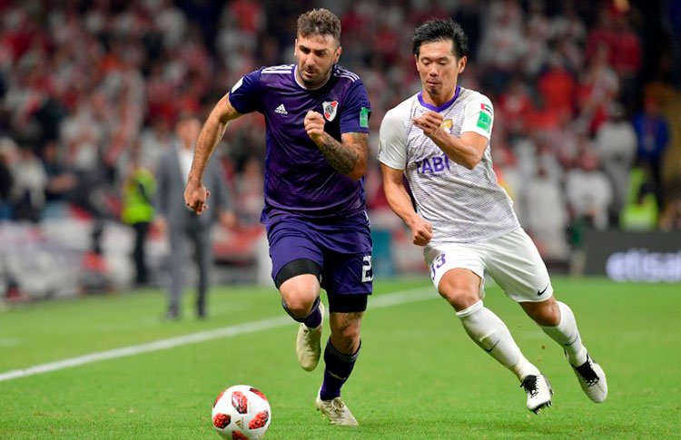
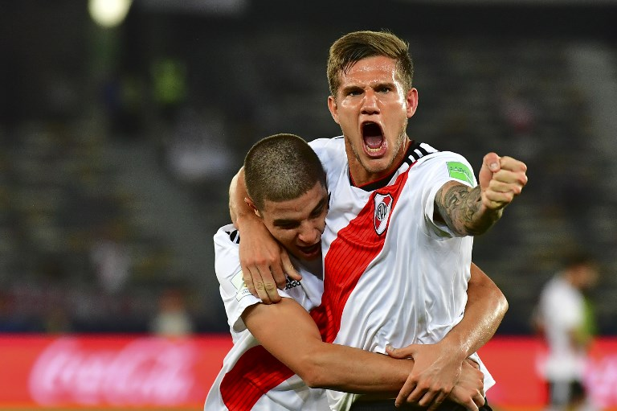

En las semifinales del Mundial de Clubes 2018, River Plate se enfrentó al Al-Ain, el campeón de la liga emiratí. El partido se disputó el 18 de diciembre en el estadio Hazza bin Zayed. Durante los 90 minutos reglamentarios y el tiempo extra, el encuentro terminó en empate 2-2. Los goles de River Plate fueron anotados por Rafael Santos Borré. La definición llegó en la tanda de penaltis, donde Al-Ain se impuso 5-4, eliminando a River Plate de la competencia por el título mundial.
Después de la derrota en semifinales, River Plate disputó el partido por el tercer puesto contra el Kashima Antlers de Japón. Este encuentro tuvo lugar el 22 de diciembre en el estadio Sheikh Zayed. River Plate ganó con autoridad, imponiéndose 4-0. Los goles del equipo argentino fueron marcados por Bruno Zuculini, Rafael Santos Borré, Gonzalo "Pity" Martínez, y un autogol de un jugador del Kashima. Con esta victoria, River Plate aseguró el tercer lugar en el Mundial de Clubes 2018. A pesar de no haber alcanzado la final, la participación de River Plate en el torneo demostró su alto nivel competitivo en el escenario internacional.
